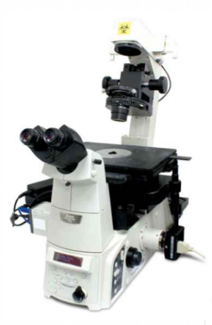

This motorised inverted
widefield fluorescence microscope features a fast and sensitive
sCMOS camera for fluorescence detection and a colour camera for
transmitted light. Hardware autofocus ensures continuously
stable focusing throughout long imaging experiments. The system is
suitable for a wide variety of widefield imaging experiments
(brightfield, phase contrast, multi-channel fluorescence) on live or
fixed samples.
Available techniques:
- Transmitted light imaging (brightfield, phase contrast)
- Widefield multi-channel fluorescence imaging with a fast and
sensitive camera
- Long-term time-lapse imaging (with hardware autofocus)
Objectives:
- CFI Plan Fluor 4x/0.13 dry, FWD 17.2 mm, CG - (Phase contrast)
- CFI Plan Fluor 10x/0.3 dry, FWD 16 mm, CG 0.17 mm (Phase contrast)
- CFI S Plan Fluor ELWD 20x/0.45 dry, FWD 8.2 - 6.9 mm, CG 0 - 2 mm
(Phase contrast)
- CFI S Plan Fluor ELWD 40x/0.6 dry, FWD 2.8 - 3.6 mm, CG 0 - 2 mm
(Phase contrast)
- CFI S Plan Fluor ELWD 60x/0.7 dry, FWD 1.8 - 2.6 mm, CG 0.1 - 1.3 mm
(Phase contrast)
[FWD = free working distance, CG = cover glass]
Tube lenses: 1x, 1.5x
Fluorescence
excitation sources:
Filter sets:
Detectors and
cameras:
- Hamamatsu Orca Flash 4.0 V2 sCMOS (2048x2048 pixels, 6.5 µm/pixel)
- Nikon DS-Ri 1 colour CCD camera (1280x1024 pixels, 6.45 µm/pixel)
Software:
Other features:
- Long-working distance condenser N.A. 0.52 W.D. 30 mm
- Manual stage
- Motorised filter turret
- Motorised focus drive
- PFS hardware autofocus
| Usage fees [SGD/hour] |
NTU |
Others |
| 15 |
20 |
| Location |
EMB 03-02Y |
| Contact |
nobic.facilities@e.ntu.edu.sg,
kbala@ntu.edu.sg |
BACK TO TOP